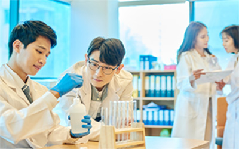
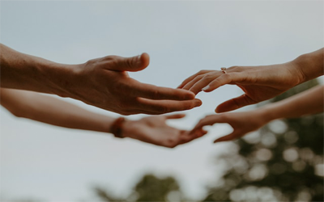

인재상
안전하고 행복한 일터를 구현하고, 같이짓는 가치를 함께 실현할 실천의식과 배려의 마인드를 갖춘 창의적 인재
롯데정밀화학과 지속 가능한 성장을 꿈꾸는 인재를 기다립니다.
- 보다 치열하게
내일을 준비합니다 - 빠르게 변화하는 시장 환경 속에서 시장을 리드하고 경쟁력을 확보하기 위해 끊임없이 학습하는 자세를 추구합니다.
- 보람과 재미를 느끼는 사람
- 본인이 담당하는 업무에서 비전을 느끼고,
- 업무 자체에서 보람과 재미를 찾는 태도로
- 개인과 회사의 성장에 긍정적인 영향을 미칩니다.
- 타인을 아끼고 배려하는 사람
- 회사는 ‘함께하는 곳’ 임을 이해하고
- 자신과 주변의 만족스러운 근무환경을 위해
- 상호 배려하고 동료를 아낍니다.
우리가 생각하는 인재.
실패가 두려워 주저하지 않고 기꺼이 앞으로 나아갑니다.
현재에 안주하지 않고 주도적으로 역량을 키우고 주위를 두루 살펴 협력과 상생의 미덕을 실천합니다.
- 
관계의 문화를 지향합니다.
우리는 끊임없이 변화하는 환경 속에 살아갈 뿐만 아니라 그 환경을 개선하는 일을 합니다. 때문에 우리가 이루어 낸 현재의 성과에 보람과 쾌감을 느끼며 일하지만 결코 안주하지는 않습니다. 우리는 나이나 직급에 얽매이지 않고 주도적으로 일하며 내일을 준비합니다. 시대의 흐름을 읽고 새로운 기술을 익혀 스스로 역량을 키워 나가는 인재가 자랑스러운 우리의 동료입니다.
-
기꺼이 도전합니다.
우리가 하는 일은 지도 없이 낯선 길을 맞닥뜨리는 것과 같습니다. 단번에 지름길을 찾을 수도 있지만 오랫동안 같은 자리를 돌고 돌 수도 있습니다. 그럼에도 과감히 발걸음을 떼어야 길을 찾습니다. 애초에 실패라는 개념은 없습니다. 돌고 도는 길에서 발견하게 될 무수한 가능성들이 다음 여정에 자양분이 될 거라 믿습니다. 도전하는 패기와 투지가 우리의 일을 가능하게 합니다.
- 
협력과 상생의 미덕을 실천합니다.
우리의 일은 뛰어난 한두 사람의 능력이 아니라 구성원들 모두가 신뢰 속에서 서로 협력해야 이루어 낼 수 있습니다. 또한 다양한 이해관계를 고려하고 손을 맞잡아야 우리가 꿈꾸는 지속 가능한 내일을 맞이할 수 있습니다. 우리는 서로 힘을 보태 성과를 만들어 가는 과정의 즐거움을 알고, 사회적 존재로서 더불어 살아가는 의미를 이해하는 인재를 기다리고 있습니다.